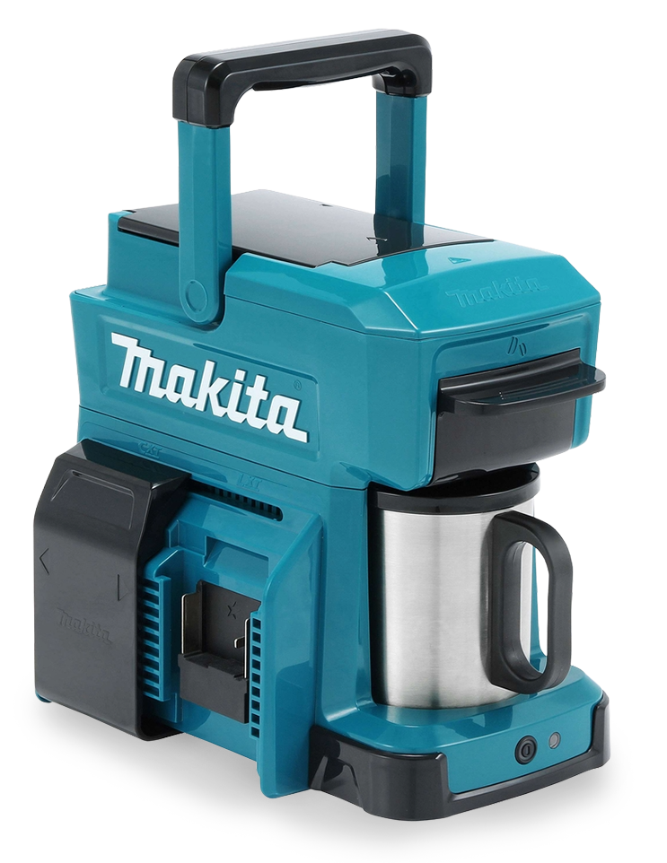
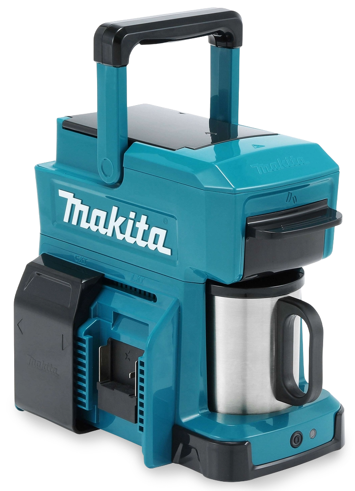

Compatibilidad
Funciona con las mismas baterías que tus herramientas Makita
La cafetera portátil Makita DCM501 combina autonomía, resistencia y practicidad para acompañarte donde sea que estés.
CONOCER MÁS
Funciona con las mismas baterías que tus herramientas Makita
Pequeña, liviana, resistente y pensada para fácil transporte
En 5 minutos tenés tu café caliente listo para disfrutar

Permite cargar agua rápidamente y facilita la limpieza de cada componente.
Dosificación precisa para preparar una taza sin desperdiciar café.
Utilizadas en herramientas profesionales. Compatible con toda la línea Makita.
De acero inoxidable y reutilizable. No requiere filtros descartables.
De acero inoxidable para conservar mejor la temperatura y con sistema de encastre perfecto.
Sostiene el café molido dentro del filtro durante la preparación y permite extracción uniforme.
